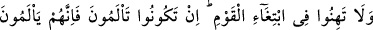
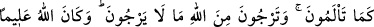
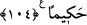

daha sevdiği hiç bir şey farz kılmamıştır. Eğer namazdan başka bir şey kendisine
daha sevimli olsaydı, melekleri onunla Allah’a ibâdet ederlerdi. Meleklerin bir kısmı
rükûda, bir kısmı secdede, bir kısmı kıyamda ve bir kısmı da kuûddadır.”[139]
Peygamberimiz (s.a.v)’in en son tavsiyeleri namaz ve kölelerle ilgili olmuş: “Namaza
ve eliniz altındaki kölelere dikkat edin!” buyurmuştur.
Şunu bil ki, Allah’ın devamlı namazda olmayı bahşettiği bâzı kulları vardır. Onlar
ezelden ebede kadar namazlarında devamlıdırlar. Bu, kısır akıllarla anlaşılmaz. Bunu
ancak Allahu Teâlâ’yı bilenler anlarlar.
“et-Te’vîlâtü’n-necmiyye”de şöyle denilmektedir: “Namaz mü’minler üzerine
vakitleri belli bir farzdır.” Yâni, namaz “Namazı dosdoğru kılın.” (Müzzemmil,
73/20), ona devam edin âyeti ile farz kılındığı zaman bütün vakitlerde farz idi. Sonra
insanın zayıflığından zarûrî olarak beş vakit namaz kılınmasına ruhsat verilmiştir.
Nitekim mirac gecesinde namaz elli vakit olarak farz kılınmıştı. Peygamber (a.s.)’ın
şefâati ile beşe indirildi. Bu hüküm, insanların avamı içindir. Yoksa Allah, “Onlar,
namazlarına devam ederler” (Mü’minûn, 23/9) buyurarak havâs için devamlı namazı
geçerli kılmıştır. Mesnevîde şöyle denilmiştir:
Yol gösterici olan namaz insana beş vakit olarak farzedildi
Fakat Hak âşıkları daima namazdadır
“Beni geç ziyaret et ki muhabbetin artsın”
Hadisi balıklar hakkında değildir
Çünkü balıklar deniz olmadan ünsiyet ve can tutmazlar, ölürler
Hiç kimse kendine “Beni geç ziyaret et” der mi?
Hiç kimse kendisine nöbetle dost olur mu?
Âşığın gönlünde ma‘şuktan başkası yoktur
Onların arasında bu senin, bu benim denilmez
104- O (düşman) topluluğu takip etmekte gevşeklik göstermeyin. Eğer siz acı
çekiyorsanız onlar da, sizin çektiğiniz gibi acı çekmektedirler. Üstelik siz Allah’tan,
onların ümit etmedikleri şeyleri umuyorsunuz. Allah ilim ve hikmet sahibidir.
“O topluluğu tâkip etmekte gevşeklik göstermeyin.” Bu âyet Küçük Bedir Gazvesi
hakkında inmiştir. Bu mahal Kinâneoğulları’nın her yıl sekiz gün toplandığı bir çarşı
(panayır) idi.
Rivâyet edildiğine göre Ebû Süfyan Uhud savaşından ayrılırken “Ey Muhammed,